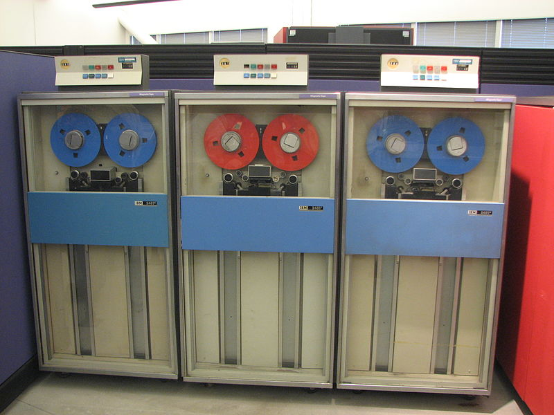
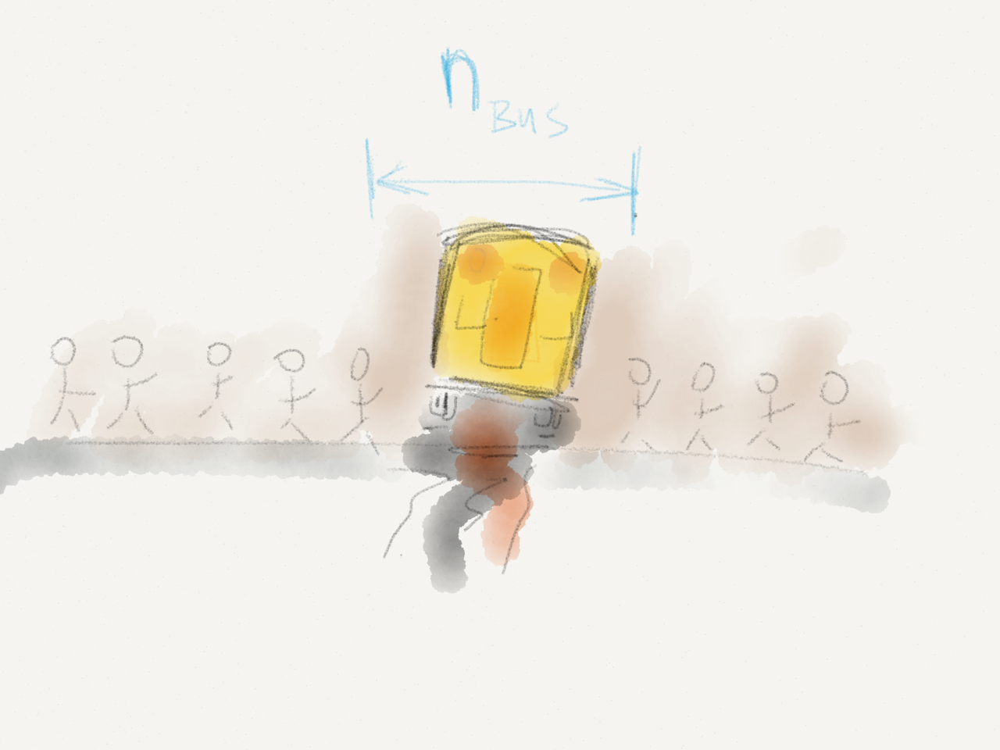

What is a »full« stack, anyways?
22. Mai 2014
@bascht
Galileo Galilei - 1636
Silos

Rollenverteilung
 Creative Commons Attribution 2.0 Generic (https://commons.wikimedia.org/wiki/File:IBM_System_360_tape_drives.jpg)…für Entwickler…
…und Management…
Rollentausch
(Weg des geringsten Widerstands)
* {
/* No idea what I'm cascading… */
color: 'Kornblumenblau' !important;
}
$$('I'){
$('will#wrap').each(function('until'){
return this.self._self.that['crap'].works;
});
};;;; // eat ._this, jslint!
$ sudo sudo su -c "sudo do --what 'I want'"
Kleine Trutzburgen
CC BY-NC-ND 2.0 — Jos van Wunnik
Werkzeug
nginx::resource::upstream { 'here_be_dragons':
members => [
'lolcathost:8080',
'lolcathost:8081',
'lolcathost:8082',
],
}
nginx::resource::vhost { 'app.yournextstartup.com':
proxy => 'http://here_be_dragons',
}
Tools
ansiblebcfg2cdistchefcfengineisconfjujulcfg ocsinventoryngwithglpiopsipikt puppetquattorradmindrex rundecksmartfrogsaltspacewalkVerantwortung
…und grüne Builds.
var management, kunde;
function heilewelt(anforderung) {
var idealismus;
return mehrwert;
}

Releases.
Stellt euch vor…
…es ist Freitag.
Euer Deployment-Graph…

…skaliert nicht
Bauchweh-Metrik
Wer versteht alle base / helper / tools / domain Klassen noch?
Wer versteht euer Deployment?
Busnumber
Warum nicht…
- So oft wie möglich deployen?
- Die neuen Mitarbeiter deployen lassen?
- Still und leise im Hintergrund deployen?
2014
Infrastruktur-Code ist auch Code!
Entstehen eure Probleme…
- …im Code?
- …in der Serverkonfiguration?
- …beim Rollout?
Im Zusammenspiel?

© 2013 — theprofoundprogrammer.com
Keine Ausreden mehr.
- Infrastruktur Problem?
- Bug-Ticket
- Infrastruktur Änderung?
- Feature-Ticket
- Großer Feature-Rollout steht bevor?
- Story-Ticket
Wie sieht euer Build aus?
 Quelle: GFDL image by user Fanghong. Creative Commons Attribution-Share Alike 3.0 Unported
Quelle: GFDL image by user Fanghong. Creative Commons Attribution-Share Alike 3.0 Unported
Kein Commit ohne Ticket.
Kein Major-Release ohne Ticket.
Code-Reviews!
- Auch für Infrastruktur.
- Erst recht für Infrastruktur.
Integration
Hat euer Infrastruktur-Repository Release-Branches?
Zu welchem Infrastruktur-Branch gehört
Application-Branch feature/gh-1382?
Läuft Software 4.2.23 auch noch mit
Migrations-Stand 4.2.20-backported-hotfix?
Wie geht es eurem Frontend, wenn es kein Backend mehr gibt?
Dokumentation
(Donnergrollen)
CLI > Code > Wiki
$ bin/deploy --wat?
Das Firmenwiki

- Neue Mitarbeiter?
- Alte Hostnamen?
- Kreuz-Referenzen!
- Makros?
- Kopierbare Kommandos?
Eure Toolchain
- versioniert
- korrekt benamt
- dokumentiert
- selbsterklärend
- umgebungsunabhängig
Hübsch verpacken.
#!/bin/sh#!/usr/bin/env ruby
[ 1 -eq 1 ] && [ -n "`echo true 1>&2`" ] # true
[ 1 -eq 2 ] && [ -n "`echo true 1>&2`" ] # (no output)
... there are dark corners in the Bourne shell, and people use all of them.
--Chet Ramey
Für den Fehlerfall bauen

- Wie sehen eure Fehlerseiten aus?
- Kann jeder Layer kaputt gehen?
- Wie schnell könnt ihr zurückrollen?
- Könnt ihr Features deaktivieren?
- Könnt ihr stale content ausliefern?
Restore > Backup
Eure Toolchain wird wertvoller,
je öfter ihr sie ausführt.
Mitarbeiter des Monats

Deployment ist nicht der letzte Schritt!
Lebenszeichen sofort nach dem Deployment einsammeln.
Puls fühlen
$ curl -XGET 'lolcathost:9200/_cluster/health?pretty=true'
{
"cluster_name" : "prism_europe",
"status" : "green",
"timed_out" : false,
"number_of_nodes" : 242,
"number_of_data_nerds" : 242
"active_primary_shards" : 50,
"active_shards" : 100,
"people_actually_reading_this_slide": 1,
"relocating_shards" : 0,
"initializing_shards" : 0
}
Atem checken
var casper = require('casper').create();
var baseurl = casper.cli.get("baseurl") || 'http://bascht.com';
casper.start(baseurl, function() {
this.capture('shots/homepage.png');
this.test.assertTitle('bascht.com');
this.test.assertExists('input[action$="/search"]', 'Yay!');
this.clickLabel('Blog', 'a');
});
Treat staging failures like as if they were production failures.
— Timothy Fitz (IMVU)
Durchatmen
Philosoph, Wissenschaftler, Mathematiker, Diplomat, Physiker, Historiker, Politiker, Bibliothekar, Doktor des Rechts, Doktor des Kirchenrechts

Specialization is for insects.
-- Robert A. Heinlein
Kleiner Lackmustest
# ~/.bash_login
rm ~/.bash_history && sync;
echo "They never fail who die, In a great cause! Lord Byron";
echo "Welcome to $(hostname).";
Sebastian Schulze
(@bascht) , 29.years Software- & Infrastrukture-Developer Vogtland, Leipzig, Köln, Berlin